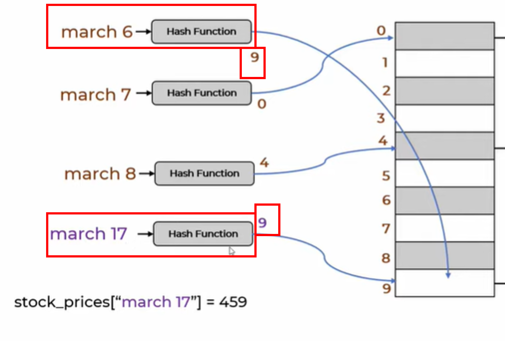

# type hints
from typing import List, UnionIn this notebook, we will understand and build Hash Table aka Dictionary in Python from scratch. We will build it step-by-step after understanding its core concepts.
Q. Why do we need Dictionary or a Hash map? Why not simply use array?
Answer: 2 reasons
- Searching in array has O(n) time-complexity whereas searching in dictionary has a constant O(1) time-complexity.
- Another reason for using Hash table/ Hash map is that it make its use more intuitive. For example: in dictionary to find price on march 6, simply write
stock_prices['march 6']whereas, if we are using array, we need to write a for loop as shown above. It makes the code complex, inefficient and not super-intuitive to write.
Hash function
In Hash Table, we use a Hash Function - which converts a string key into a index value (integer).
For example: march 6 is converted to 9 by using sum of its ascii values and its mod with 10 as the hash function (assuming we are making a dictionary contaning only 10 elements). In Python, we can get ascii value of a character by using ord
Let’s write a code to do this i.e. convert a string key into an index
def get_hash(key):
total = 0
for char in key:
total+=ord(char)
return total%10 # assuming 10 is the size of array
print('march 6: hashes into the index value = ', get_hash('march 6'))march 6: hashes into the index value = 9Great! it works. Now, we can try writing the code for HashTable class.
HashTable
Before diving into the code, it’s a good idea to pause for a moment and think what different methods/functionalities we want our HashTableto support. Once we have a clear understanding of these requirements, writing the code becomes much simpler.
Throughout this blog, I will include visual diagrams to help illustrate what we’re aiming to build with the HashTable. These images will serve as mental maps, making it easier to write and understand the code. (Being able to visualize how data structures work is key to mastering them. Once you can visualize them, you’ll be able to code them effortlessly—without memorizing a single line.)
Q. What functions we want in HashTable?
Answer: 1. We want to add a key-value pair 2. We want to get value by supplying key 3. We want to remove by supplying key
To implement any of the above functionalities, we’ll first need a way to hash a key into an integer index—since computers operate on numbers, not strings. (Technically, computers can handle strings, but only by converting them to numerical codes, which is abstracted away from us.)
Once we have this index, we’ll use it to internally manipulate data in the array to achieve the desired functionality.
Based on the information presented above, the simplest signature of HashTable would look like this:
class HashTable:
def __init__(self):
pass
def get_hash(self, key: str):
""" converts a key into index (int) """
pass
def add(self, key: str, value: Union[str, int]):
""" adds a key-value pair """
pass
def get(self, key: str):
""" outputs value given a key """
pass
def remove(self, key:str):
""" removes key-value given a key """
passLet’s start coding it.
We will try to test it for a simple case illustrated below:
class HashTable:
def __init__(self):
self.MAX = 10 # assume 10 is the size of dictionary
self.arr = [None for i in range(self.MAX)] # allocate memory
def get_hash(self, key: str):
""" converts a key into index (int) """
total = 0
for char in key:
total+=ord(char)
return total%self.MAX
def add(self, key: str, value: Union[str, int]):
""" adds a key-value pair """
idx = self.get_hash(key) # get the index for a key
self.arr[idx] = value # insert value at the calculated index
def get(self, key: str):
""" outputs value given a key """
idx = self.get_hash(key) # get the index for a key
return self.arr[idx] # return the value at the calculated index
def remove(self, key:str):
""" removes value given a key """
idx = self.get_hash(key) # get the index for a key
self.arr[idx] = None # set the value to None at the calculated index# Let's test the code we created so far
ht = HashTable()
print('array on initialization', ht.arr)
# add values
ht.add('march 6', 310)
ht.add('march 7', 340)
ht.add('march 8', 380)
print('after adding data', ht.arr)
# get value
print('value on march 6 is: ', ht.get('march 6'))
# remove value
ht.remove('march 8')
print('after removal: value on march 8 is: ', ht.get('march 8'))array on initialization [None, None, None, None, None, None, None, None, None, None]
after adding data [340, 380, None, None, None, None, None, None, None, 310]
value on march 6 is: 310
after removal: value on march 8 is: NoneGreat! this works as expected! Now let’s do testing on edge cases.
# Edge case-1: get value for a non-existent key
print('value on march 17 is: ', ht.get('march 17'))value on march 17 is: 310Oops!
Why are we getting the value for a non-existent key like march 17 to be the same as the value for march 6?
Answer: This happened because both march 17 and march 6 produced the same index - 9 - when passed through our get_hash function. And, since our get method relies solely on this index and ddoesn’t verify whether the actual string key exists at that index, it ends up returning an incorrect value.
Note: In fact, there can be multiple string keys that can generate the same hash value (in this case, 9) when processed by our hash function, get_hash.This phenomenon is known as a hash collision, and it’s the reason why we got a misleading result for march 17.
# Edge case-2: add a new key-value pair
ht.add('march 17', 459)
# Now get the value of march 6
print('value on march 6 is: ', ht.get('march 6'))value on march 6 is: 459Oops!
Why are we getting a wrong value for march 6? Initially it was 310 and now it comes out as 459. Why?
Answer: This happened because of the same index problem that we discussed above. Since the index of both march 17 and march 6 is 9, when we added march 17’s data, it overwrote at index 9 (which was for march 6) with the new valu the new value of 459 and removed 310. That’s why we don’t see the original value. As mentioned previously, this is called as Collision

To solve both these challenges (Edge cases 1 & 2), we need to modify our code to start storing the key along with value as a tuple., We can do this by initializing the array as an array of arrays (or lists).
But before we implement this change, let’s first refactor our code to use Python’s standard operators like __getitem__, __setitem__, and __delitem__ to make use of HashTable more intuitive.
class HashTable:
def __init__(self):
self.MAX = 10 # assume 10 is the size of dictionary
self.arr = [None for i in range(self.MAX)] # allocate memory
def get_hash(self, key: str):
""" converts a key into index (int) """
total = 0
for char in key:
total+=ord(char)
return total%self.MAX
def __setitem__(self, key: str, value: Union[str, int]):
""" adds a key-value pair """
idx = self.get_hash(key) # get the index for a key
self.arr[idx] = value # insert value at the calculated index
def __getitem__(self, key: str):
""" outputs value given a key """
idx = self.get_hash(key) # get the index for a key
return self.arr[idx] # return the value at the calculated index
def __delitem__(self, key:str):
""" removes value given a key """
idx = self.get_hash(key) # get the index for a key
del self.arr[idx] # delete value at the calculated index# Let's test the code we created so far
ht = HashTable()
# add values
ht['march 6'] = 310
ht['march 7'] = 340
print('after adding data', ht.arr)
# get value
print('value on march 6 is: ', ht['march 6'])
# remove value
del ht['march 7']
print('after removal of march 7: ', ht.arr)after adding data [340, None, None, None, None, None, None, None, None, 310]
value on march 6 is: 310
after removal of march 7: [None, None, None, None, None, None, None, None, 310]Handling Collisions
There are 2 ways to handle collisions.
1. Chaining:
Here, we do 2 things.
we store a list at each index instead of single element (as briefly discussed earlier).
Each element in this list is a tuple of
(key, value)pair.
Time complexity to retrieve an element in this case is O(n) in the worst-case, because we may need to scan through all elements in the list at a given index to find the correct key.
2. Linear Probing:
Instead of using lists at each index, linear probing handles collisions by searching for the next available empty slot in the array.
For eg. in the above image (LEFT), a collision occurs at index 9. To insert the key march 17, we look at the following indices one by one. Since index 9 is already occupied and it’s the end of the array, we wrap around to the beginning. We find that index 1 is empty, so we store the (march 17, 459) pair there, as shown on the RIGHT.
Now, let’s build hash table first with Chaining technique to handle collision and then Linear Probing.
Chaining
class HashTable:
def __init__(self):
self.MAX = 10
self.arr = [[] for i in range(self.MAX)] # initialize list in each memory location instead of None
def get_hash(self, key: str):
""" converts a key into index (int) """
total = 0
for char in key:
total+=ord(char)
return total%self.MAX
############################################
# # Partially correct but Incorrect 💔 😢
#############################################
# def __setitem__(self, key: str, value: Union[str, int]):
# """ adds a key-value pair """
# idx = self.get_hash(key) # get the index for a key
# self.arr[idx].append((key, value)) # append (key, value) tuple to the list
### The problem with above function is - if we add same key twice with different values, it will store both (key, value) tuples.
### Ideally, it should update the old value by the new balue for the repeated key.
############################################
# # Partially correct but Incorrect 💔 😢
#############################################
# def __setitem__(self, key: str, value: Union[str, int]):
# """ adds a key-value pair """
# idx = self.get_hash(key) # get the index for a key
# # if there is no k-v tuple yet, simply add the k-v tuple
# if len(self.arr[idx])==0:
# self.arr[idx].append((key, value))
# return # STOP
# # else check if the key exist, and if it does then remove the existing k-v tuple and then add new k-v tuple
# existing_keys = []
# for kv in self.arr[idx]:
# k, v = kv
# if k==key:
# v = value # update the value -> Sadly, this won't work. Because this does not change the self.arr
def __setitem__(self, key: str, value: Union[str, int]):
""" adds a key-value pair """
idx = self.get_hash(key) # get the index for a key
# if there is no k-v tuple yet, simply add the k-v tuple
if len(self.arr[idx])==0:
self.arr[idx].append((key, value))
return # STOP
# else check if the key exist, and if it does then remove the existing k-v tuple and then add new k-v tuple
found = False
for i, kv in enumerate(self.arr[idx]):
k, v = kv
# if key exists (i.e. we need to update the old value by new value), break the loop, delete the tuple at index i
if k==key:
found = True
break
if found:
del self.arr[idx][i] # OR self.arr[idx][i] = (key,val); return
# Now add the new k-v tuple
self.arr[idx].append((key, value))
def __getitem__(self, key: str):
""" outputs value given a key """
idx = self.get_hash(key) # get the index for a key
# if the key exist, return the appropriate value else return None
for kv in self.arr[idx]:
k, v = kv
# if key exists, return the value
if k==key:
return v
# else return None
return None
def __delitem__(self, key:str):
""" removes value given a key """
idx = self.get_hash(key) # get the index for a key
# if the key exist-> delete, else raise error that key not found
for i, kv in enumerate(self.arr[idx]):
k, v = kv
# if key exists, return the value
if k==key:
del self.arr[idx][i]
return # STOP
# else raise error
print((f'⚠ key = {key} not found')) # OR raise Exception(f'key = {key} not found')# Let's test the code we created so far
ht = HashTable()
print('array on initialization', ht.arr)
# add values
ht['march 6'] = 310
ht['march 7'] = 340
ht['march 17'] = 459
print('after adding data', ht.arr)
# Edge case-1: get value for a non-existent key
print("-- Edge case-1 -- ")
print('value on a non-existing key (march 18) is: ', ht['march 18'])
# Edge case-2: Finding value of a key whose hash_mapping is shared across multiple data points
print("-- Edge case-2 -- ")
print('value on march 6 is: ', ht['march 6'])
# try deleting
del ht['march 6']
print('after deleting an existing key (march 6): ', ht.arr)
del ht['march 19']
print('after deleting a non-existing key (march 19): ', ht.arr)array on initialization [[], [], [], [], [], [], [], [], [], []]
after adding data [[('march 7', 340)], [], [], [], [], [], [], [], [], [('march 6', 310), ('march 17', 459)]]
-- Edge case-1 --
value on a non-existing key (march 18) is: None
-- Edge case-2 --
value on march 6 is: 310
after deleting an existing key (march 6): [[('march 7', 340)], [], [], [], [], [], [], [], [], [('march 17', 459)]]
⚠ key = march 19 not found
after deleting a non-existing key (march 19): [[('march 7', 340)], [], [], [], [], [], [], [], [], [('march 17', 459)]]Great! this worked as expected.
Exercise-1: Implement hash table where collisions are handled using linear probing.
You can use the same example as shown in the image
Show solution code
class HashTable:
def __init__(self):
self.MAX = 10
self.arr = [None for i in range(self.MAX)] # Initialize the array with None at each index (not a list of lists like in Chaining)
def get_hash(self, key: str):
""" converts a key into index (int) """
total = 0
for char in key:
total+=ord(char)
return total%self.MAX
def __setitem__(self, key: str, value: Union[str, int]):
""" adds a key-value pair """
idx = self.get_hash(key) # get the index for a key
# if slot is empty i.e. k-v does not exist for idx, insert the (key, value) pair directly
if self.arr[idx] is None:
self.arr[idx] = (key, value)
return # STOP
# else if k-v tuple already exists and k is same as key, then update it to new (key, value) tuple
elif self.arr[idx][0] == key:
self.arr[idx] = (key, value)
# else if k-v tuple already exists and k is different than key, search for an empty location (i.e. perform linear probing) and insert the (key, value) tuple
else:
while self.arr[idx] is not None:
idx = idx+1
idx = idx%self.MAX # to keep index in range from 0 to MAX-1. Also, it makes sure if we are at end, we start again from top
# above loop breaks as soon as idx reaches at memory space which is empty. Now insert the (key, value) tuple
self.arr[idx] = (key, value)
def __getitem__(self, key: str):
""" outputs value given a key """
# As such, there is no point of using hash function, get_hash to get idx for a key. Because for collision cases, we are storing (key, value) tuple at next available locations.
# So, those cases will not be directly retrievable by indexing at idx. We would require to search through whole array arr to ensure that we do not miss it.
# We can do this linear search for any given key without coding the part where we get idx and just simply code the linear search for all key values.
# But, we will want to use get_hash to make the program run faster for cases that did not have collision.
idx = self.get_hash(key)
# if key at idx is same as key in the argument
if self.arr[idx][0]==key:
return self.arr[idx][1]
else:
# iterate throughout the entire arr linearly, and see if key exists
for kv in self.arr:
if kv is not None: # if kv is None, we won't be able to index k,v as mentioned in line below
k, v = kv
if k == key:
return v
# Key was not found
print(f"⚠ key = {key} not found") # OR raise Exception(f"key = {key} not found")
def __delitem__(self, key:str):
""" removes value given a key """
idx = self.get_hash(key) # get the index for a key
# if key at idx is same as key in the argument
if self.arr[idx][0]==key:
del self.arr[idx]
return # STOP
else:
# iterate throughout the entire arr linearly, and see if key exists
for i, kv in enumerate(self.arr):
if kv is not None:
k, v = kv
if k == key:
del self.arr[i]
return
# Key was not found
print(f"⚠ key = {key} not found") # OR raise Exception(f"key = {key} not found")
##########################
# Test the code developed
##########################
ht = HashTable()
print('array on initialization', ht.arr)
# add values
ht['march 6'] = 310
ht['march 7'] = 340
ht['march 17'] = 459
print('after adding data', ht.arr)
# Edge case-1: get value for a non-existent key
print("-- Edge case-1 -- ")
print('value on a non-existing key (march 18) is: ', ht['march 18'])
# Edge case-2: Finding value of a key whose hash_mapping is shared across multiple data points
print("-- Edge case-2 -- ")
print('value on march 6 is: ', ht['march 6'])
print('value on march 17 is: ', ht['march 17'])
# try deleting
del ht['march 6']
print('after deleting an existing key (march 6): ', ht.arr)
del ht['march 19']
print('after deleting a non-existing key (march 19): ', ht.arr)array on initialization [None, None, None, None, None, None, None, None, None, None]
after adding data [('march 7', 340), ('march 17', 459), None, None, None, None, None, None, None, ('march 6', 310)]
-- Edge case-1 --
⚠ key = march 18 not found
value on a non-existing key (march 18) is: None
-- Edge case-2 --
value on march 6 is: 310
value on march 17 is: 459
after deleting an existing key (march 6): [('march 7', 340), ('march 17', 459), None, None, None, None, None, None, None]
⚠ key = march 19 not found
after deleting a non-existing key (march 19): [('march 7', 340), ('march 17', 459), None, None, None, None, None, None, None]We can notice that march 17 is stored at index 1 same as what is shown in the figure attached with the question. 😎